Exastro IT Automation SimpleMode 利用マニュアル（操作編）¶
2025/03/24 NEC Corporation
1. はじめに¶
1-1. 本書について¶
本書はExastro IT Automation SimpleMode（以下、SimpleMode） の操作⽅法についてまとめています。 本書を読むことで、以下の作業の手順を理解いただくことができます。
実機からのパラメータ収集作業
収集結果を流用した設定変更作業（構築作業）
収集結果や構築用パラメータの比較作業
SimpleModeのセットアップ手順はSimpleMode公開サイトをご覧ください。 SimpleModeには、Ansible Role Templateを導入するとWS2022とRHEL9に関する情報を組み込みますので、WS2022とRHEL9の収集/設定/比較を直接実行することが可能になります。 Ansible Role Templateの組み込み手順は資材公開サイトをご覧ください。
本手順は、Ansible Role Template組み込み済みの環境を例に操作を説明します。
1-2. 機能概要¶
SimpleModeは、インフラ自動構築ツール『Exastro IT Automation』をより手軽に使えることを目的としたツールです。
SimpleModeの機能を以下に示します。
構築済み環境からのパラメータ収集
収集したパラメータによる構築済み環境のパラメータ参照
収集したパラメータを流用・編集し、構築済パラメータを変更
収集したパラメータによる時系列間での差分比較
Exastro IT Automationの構成管理データベースによるパラメータの履歴管理
収集設定の初期値の管理
SimpleModeの概要図を以下に示します。 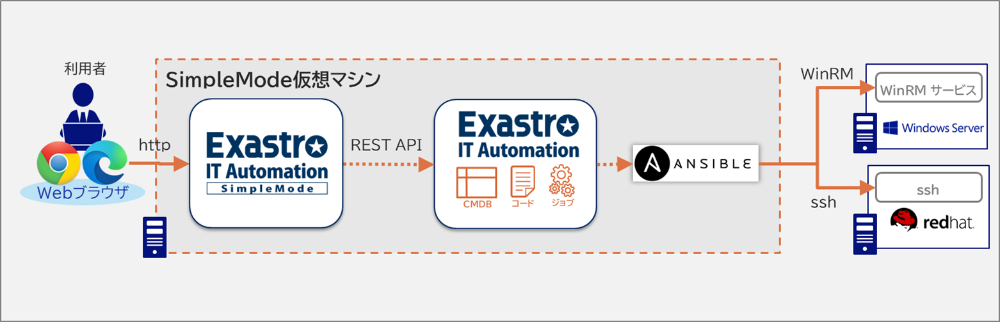 SimpleModeを構成するコンポーネントは3つです。
SimpleMode（Webアプリケーション）
Exastro IT Automation（バックエンド）
Ansible
SimpleModeはジョブやパラメータのデータを保持していません。 Exastro IT Automationをバックエンドとして、設定されているジョブやパラメータをREST APIを実行して呼び出すことで操作を行います。 利用者はSimpleModeのUIを経由して、バックエンドにあるExastro IT Automationによる自動化ジョブ、パラメータ管理を実行することができます。
2. ジョブ実行前の準備¶
ジョブを実行する前に、SimpleModeからターゲットマシンへの接続設定を行います。
2-1. ターゲットマシンの準備¶
2-1-1. WindowsServerの場合（WinRMの設定）¶
SimpleModeが収集、構築を実行するターゲットマシン(Windows)の前提条件は以下のとおりです。
ターゲットマシンはSimpleModeがインストールされたマシンから通信可能なWindowsマシンであること
ターゲットマシンにWinRM接続するアカウントはAdministratorsグループに所属していること
ターゲットマシンはWinRM接続(※)が可能であること
WinRM接続を有効化するには、2つの方法があります。
1. スクリプトによる設定（検証、開発用）¶
ターゲットマシンでPowerShellを起動し、以下のコマンドを実行してConfigureRemotingForAnsible.ps1を任意のフォルダーにダウンロードします。 なお、このスクリプトはトレーニングと開発用・環境構築用スクリプトです。 実稼働環境（本番環境）ではAnsibleのオンラインドキュメントを参照して個別に設定を行うことが推奨されています。（手動設定 を参照）
cd [ターゲットマシンの任意のフォルダー]
[System.Net.ServicePointManager]::SecurityProtocol = [System.Net.SecurityProtocolType]::Tls12
Invoke-WebRequest -Uri https://raw.githubusercontent.com/ansible/ansible-documentation/devel/examples/scripts/ConfigureRemotingForAnsible.ps1 -OutFile ConfigureRemotingForAnsible.ps1
[Tips] ターゲットマシンがインターネットに接続されていない場合
インターネットに接続されている別のマシンでps1ファイルをダウンロードし、ターゲットマシンの任意のフォルダーへコピーしてください。
ダウンロード先：
https://raw.githubusercontent.com/ansible/ansible-documentation/devel/examples/scripts/ConfigureRemotingForAnsible.ps1
ダウンロードしたConfigureRemotingForAnsible.ps1を実行します。
powershell -ExecutionPolicy RemoteSigned .\ConfigureRemotingForAnsible.ps1
2. 手動設定¶
Ansibleのオンラインドキュメント（下記）を参照し、WinRMを手動で有効化してください。 [https://docs.ansible.com/ansible/latest/user_guide/windows_setup.html]
2-1-2. Linuxの場合¶
SimpleModeが収集、構築を実行するターゲットマシン(Linux)の前提条件は以下とおりです。
ターゲットマシンはSimpleModeがインストールされたマシンから通信可能なLinuxマシンであること
ターゲットマシンはパスワード認証でssh接続が可能であること
ターゲットマシンにssh接続するアカウントはsudoでのコマンド実⾏が可能であること
2-2. SimpleModeの準備¶
2-2-1. 機器情報の変更¶
「設定」から「機器一覧」を選択します。 ホスト名が「--------」のマシンの「編集」ボタンを押します。
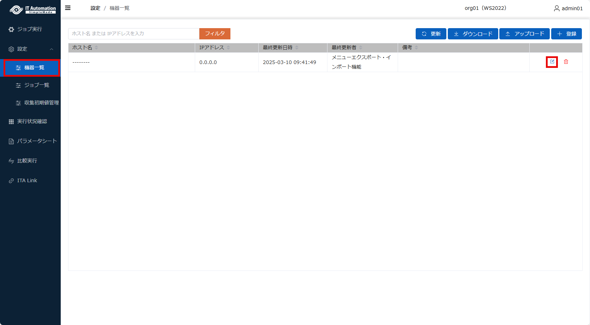
以下の項目をターゲットマシンに合わせて変更し、「保存」ボタンを押します。
項目 |
設定例 |
|---|---|
ホスト名 |
（例）target-ws01 |
IPアドレス |
（例）192.168.10.1 |
ユーザー名 |
（例）Administrator |
パスワード |
（例）password |
追加オプション |
RHEL9の場合、 |
※その他の項目は必要に応じて変更してください。
Windows Server 2022の場合
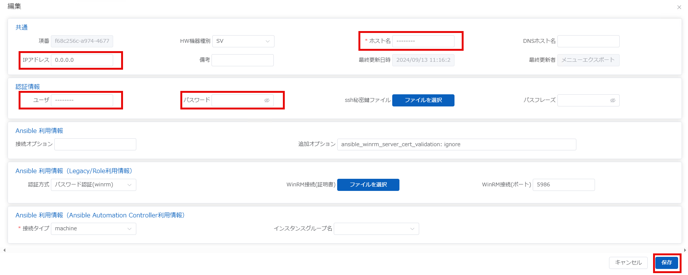
RHEL9の場合 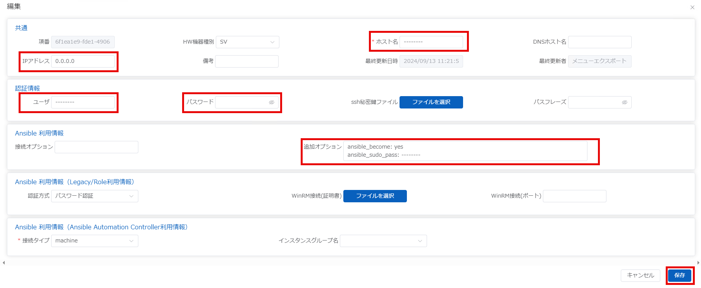
3. 初回のパラメータ収集と構築¶
ジョブ実行メニューから、ターゲットマシンからのパラメータ収集、自動構築をウィザード形式で実行します。ここでは初めてSimpleModeで収集・構築を行うシナリオを想定して説明します。
3-1. 実機からパラメータを収集する¶
実機からパラメータを収集し、収集結果を保存します。 収集したパラメータは、パラメータシートメニューから参照できる他、編集して構築用パラメータとして流用することもできます。
3-1-1. ジョブウィザードの開始¶
メニューから[ジョブ実行]を選択します。 「オペレーションを新規登録する」を選択します。 任意のオペレーション名を入力し、「つぎへ」を押します。 （例：WS2022収集_20241001_01） 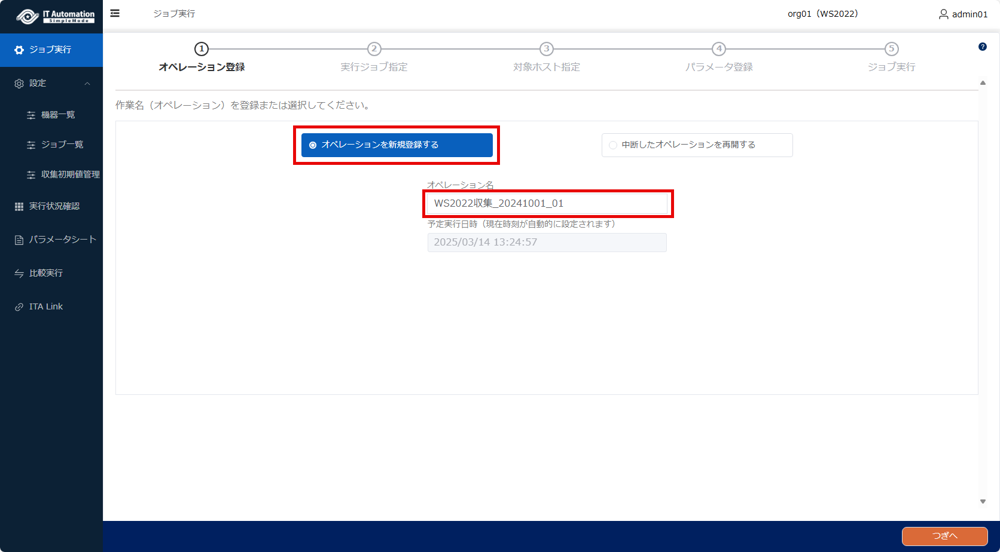
[Tips] オペレーション名の自動入力
オペレーション名の入力欄を選択状態にすると、日時情報に基づく一意なオペレーション名の候補が表示されます。
これを選択すると、そのオペレーション名を自動入力することができます。
3-1-2. 収集ジョブの指定¶
Conductorに「＜OS名＞-gather」が選択されていること、 実行したいMovementにチェックを入れて「つぎへ」を押します。 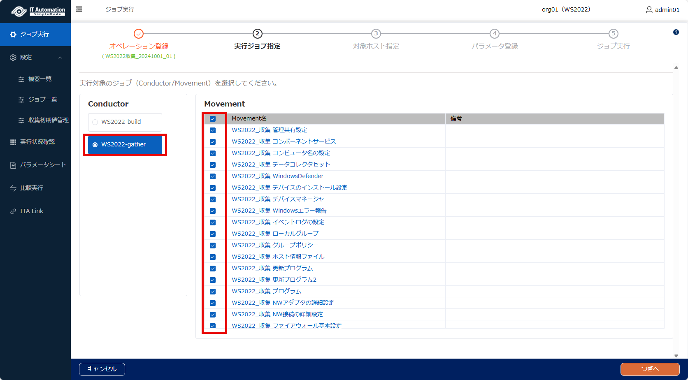
3-1-3. ホストの指定¶
"ジョブ実行前の準備"で設定したホストにチェックが入っていることを確認し、「つぎへ」を押します。
3-1-4. パラメータ登録¶
ここでは収集のためのパラメータを入力します。 「コピー元オペレーション名」に予め登録した収集初期値管理用オペレーション（ここでは、「WS2022-gather-default」）を選択して、 すべてのMovementをチェックして一括コピーを押します。表示されたメッセージで「OK」を選択します。 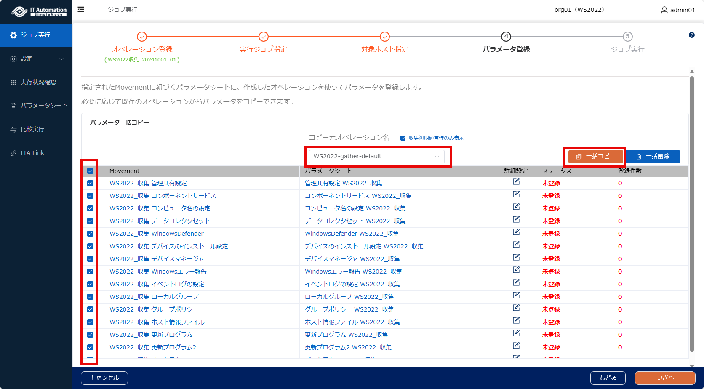 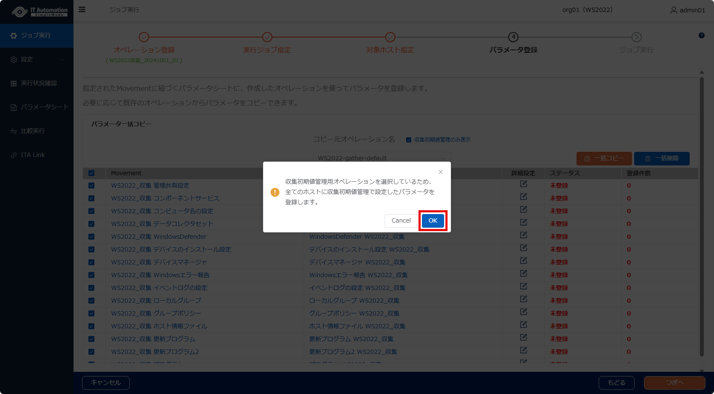
すべてのパラメータシートのステータスが"登録済"となっていることを確認し、「つぎへ」を押します。 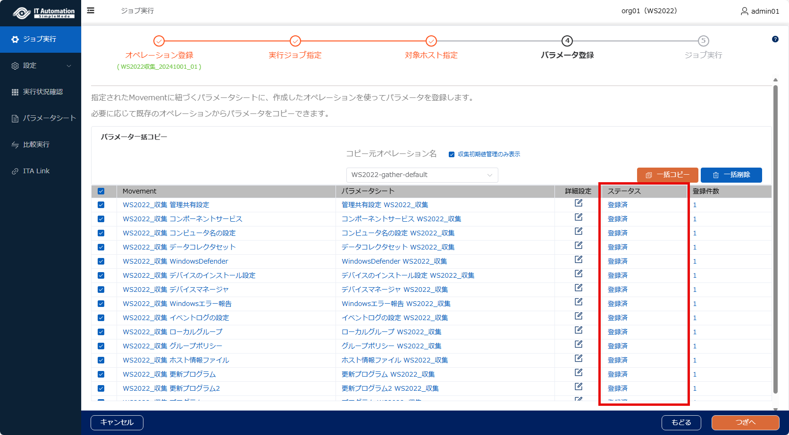
[Tips] 収集結果のフィルタリング設定
一部のパラメータシートでは、収集データを絞り込むためのキーワードが登録されています。
フィルタするキーワードを変更する場合、「詳細設定」ボタンを押して、フィルタ用パラメータを変更します。
※キーワードを変更すると取得するデータの件数が増加する可能性があります。
データの件数が多すぎると、性能面で問題が出る可能性があります。
また、件数が一定値を超えるとジョブが異常終了します。
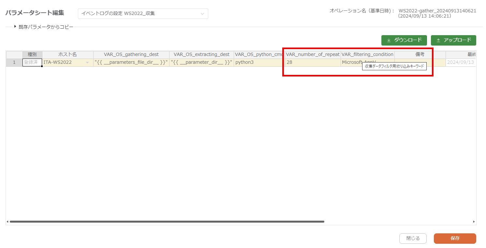
[Tips] 複数ホストのパラメータ登録
「コピー元オペレーション名」に収集初期値管理用オペレーションを選択する場合、
全てのホストに収集初期値管理で設定したパラメータを登録します。
収集初期値管理用オペレーション以外を選択する場合、コピー元に登録したホストだけコピーします。
収集初期値管理機能については、7. 収集初期値管理機能を参照してください。
3-1-5. ジョブ実行¶
ここまでに設定した内容を確認して、「実行」を押します。 「実行」を押し、表示されたポップアップで「OK」を押すと実機からのパラメータ収集処理が始まります。 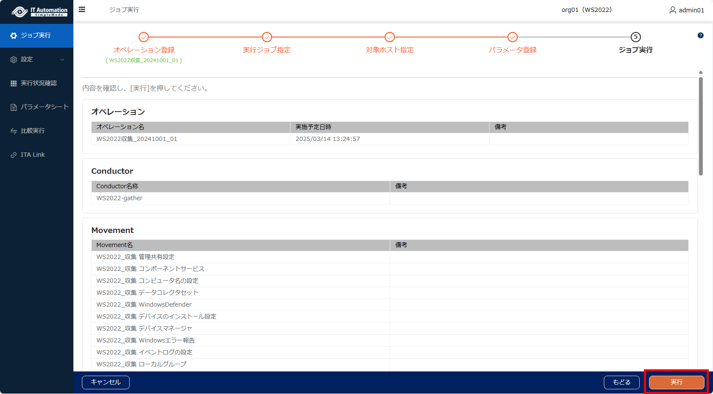
実行後は、「実行状況確認」画面に自動遷移します。 ここでは、ジョブの実行状況とログを確認できます。 「詳細」ボタンを押すと、そのオペレーションの実行状況をMovement単位で確認できます。 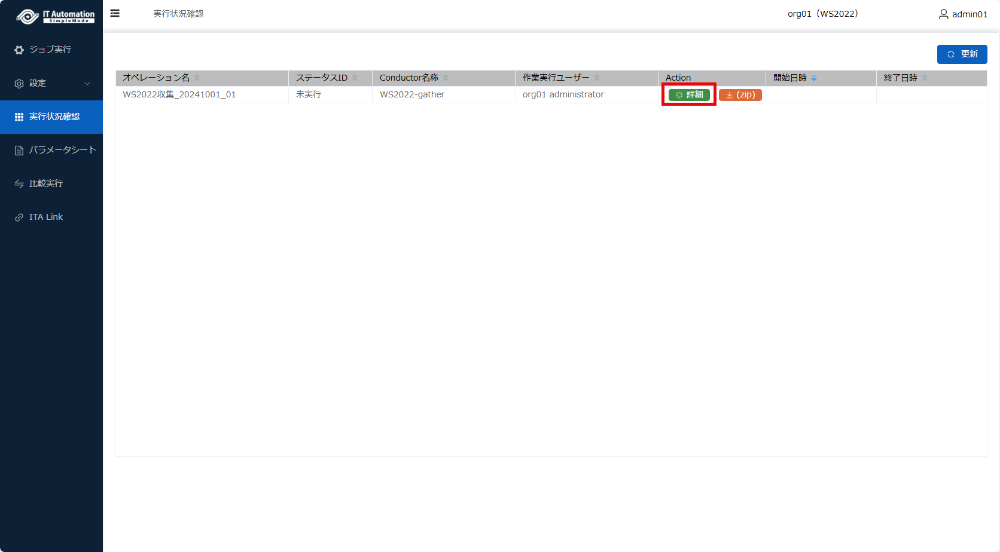
Movement名をクリックすると、ジョブ実行時のログを参照することができます。 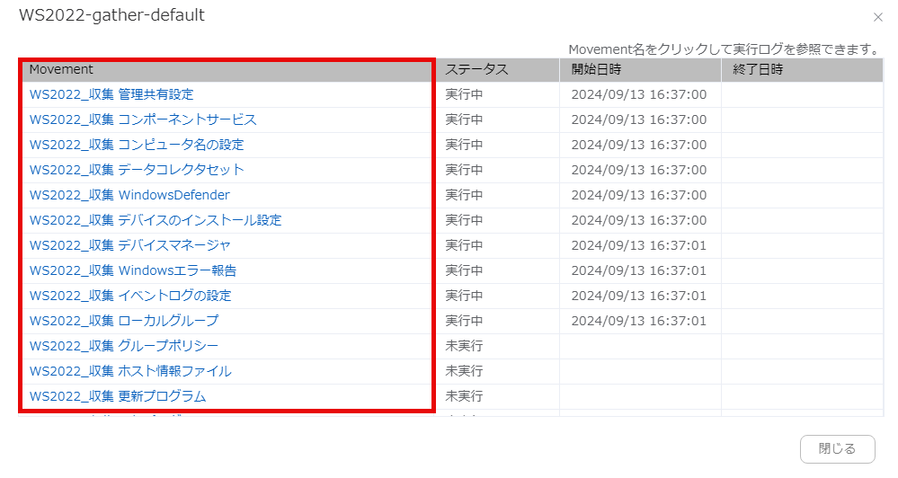
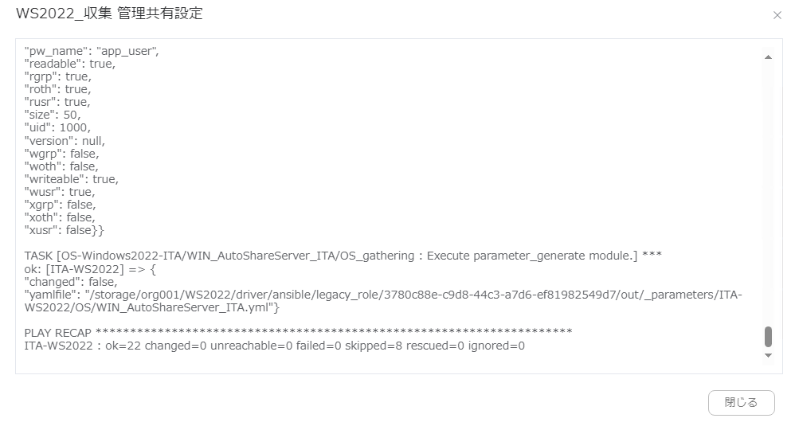
[Tips] ジョブ実行中の操作
ジョブはバックグラウンドで実行されるため、実行中にWebブラウザを閉じても構いません。
ジョブが実行している間、仮想マシンは終了しないでください。
[Tips] ジョブがエラー（異常終了）した場合
エラーになったMovementを再実行することはできません。
再実行する場合、新しいウィザードを開始して実行したいMovementを選択し、パラメータの変更などでエラー原因を解消して実行してください。
3-1-6. 収集結果の確認¶
実行状況確認画面で”正常終了"となったMovementの収集結果は、「パラメータシート」メニューから参照できます。 オペレーションの一覧で「＜OS名＞-gather-default」の「詳細」ボタンを押します。 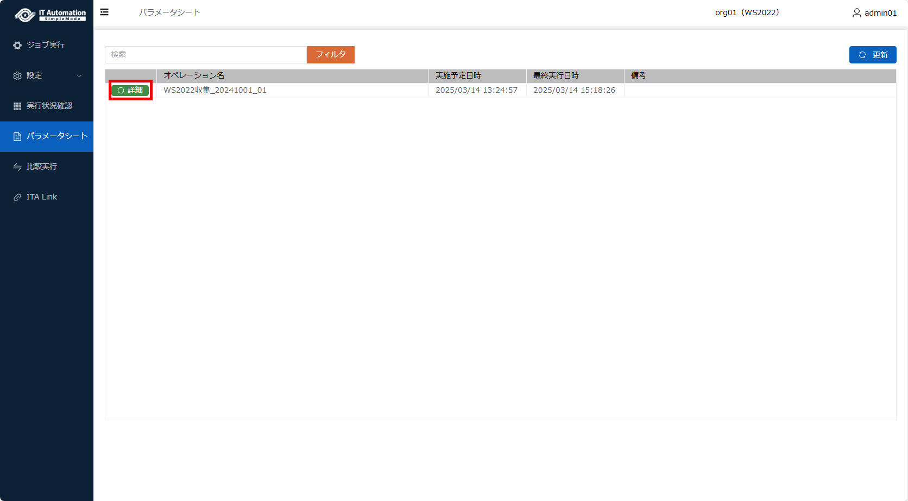
Conductor「＜OS名＞-build」を選択します。 参照したいパラメータシートの「パラメータ参照」ボタンを押すと、パラメータ参照画面が開きます。 また、「ダウンロード」ボタンを押すと、Excel／JSON形式でダウンロードができます。 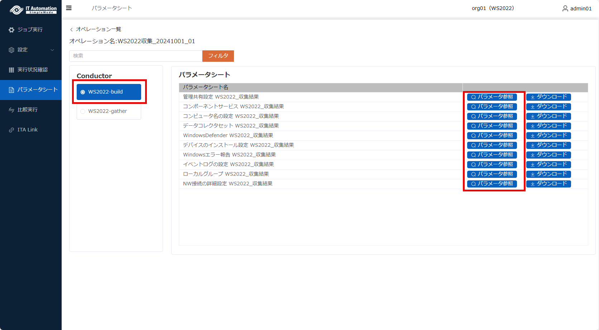
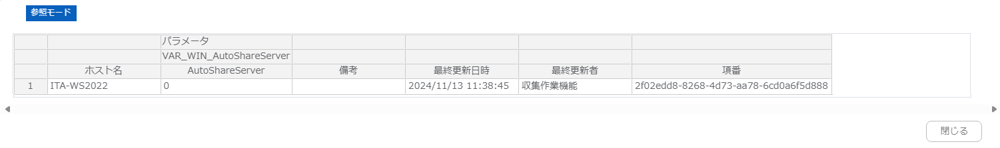
[Tips] 収集結果とConductorの関係
ジョブ実行では収集ジョブである「＜OS名＞-gather」を選択しましたが、収集結果は構築ジョブ「＜OS名＞-build」を選択します。
実機からの収集結果は、構築用に使えるパラメータとして、構築ジョブに紐づけられるためです。
3-2. 収集したパラメータを変更して実機に反映する¶
収集結果を流用して構築用パラメータを作成・構築を実行します。
3-2-1. ジョブウィザードの開始¶
メニューから[ジョブ実行]を選択します。 この画面が表示された場合、「新しいウィザードの開始」を押します。
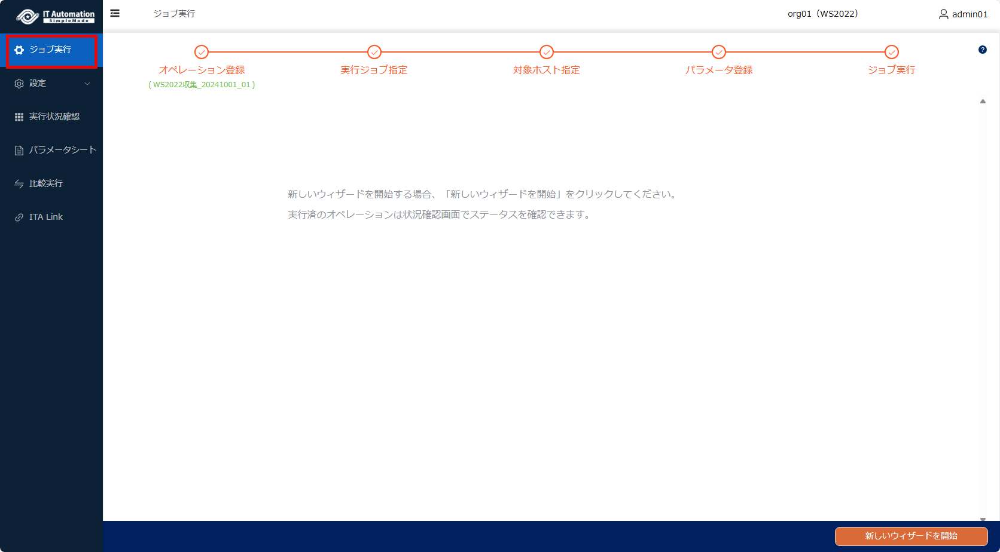
「オペレーションを新規登録する」を選択します。 任意のオペレーション名を入力し、「つぎへ」を押します。 （例：WS2022構築_20241001_01） 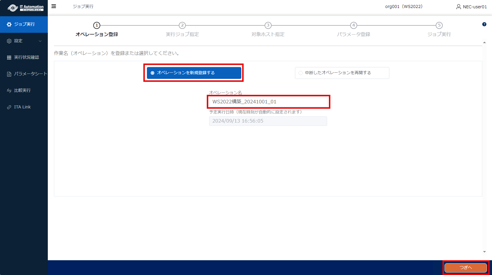
3-2-2. 構築ジョブの指定¶
Conductorに「＜OS名＞-build」を選択します。 実行したい（設定を変更したい）Movementにチェックを入れて「つぎへ」を押します。 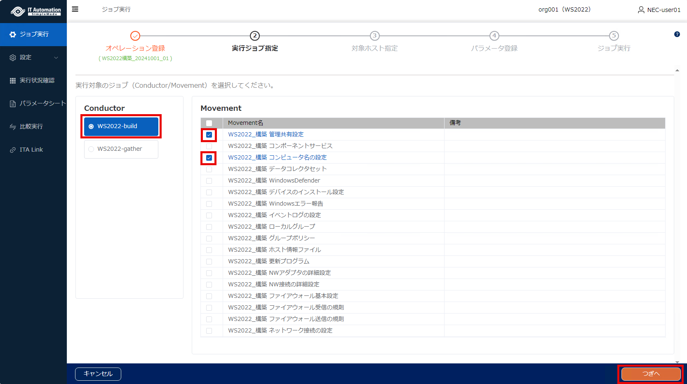
3-2-3. ホストの指定¶
"3-1. 実機からパラメータを収集する（初回）"で設定値を収集したホストにチェックが入っていることを確認し、「つぎへ」を押します。 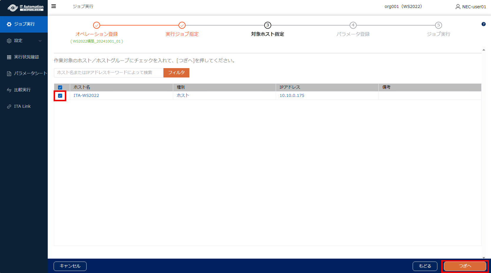
3-2-4. パラメータ登録¶
3-2-4-1. 収集結果のコピー¶
収集ジョブで取得した収集結果を流用して、構築用パラメータを入力します。
①「コピー元パラメータシート種別」を"収集結果”に設定します。
②「コピー元オペレーション名」に収集ジョブ実行時に選択したジョブを選択します。ここでは例として「WS2022収集_20241001_01」を選択します。
③変更対象のMovement（パラメータシート）にチェックを入れます。
④「一括コピー」ボタンを押すと、収集結果が現在のウィザード（オペレーション）にコピーされます。
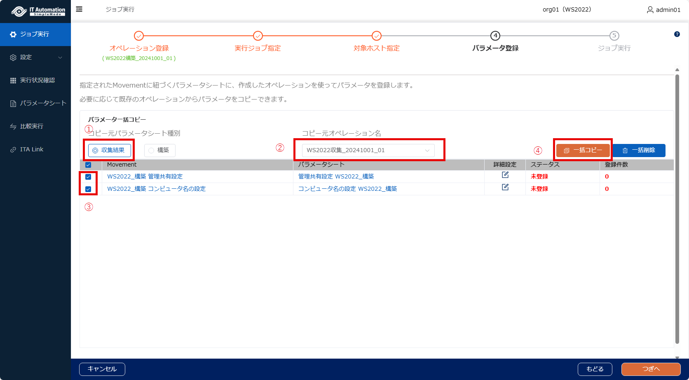
[Tips] コピー元オペレーション名の選択
コピー元オペレーション選択において、実行済み以外の未実行および実行エラーのオペレーションを選択できます。
3-2-4-2. パラメータの編集¶
パラメータを編集するには、"詳細設定"アイコンを押します。 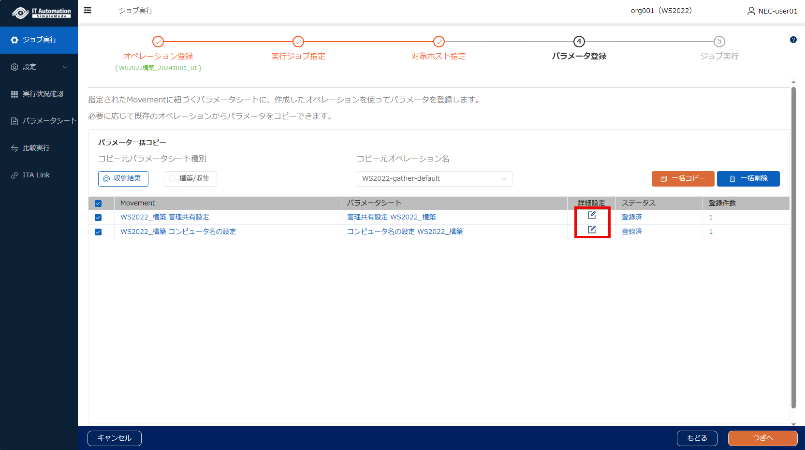
[Tips] 変更対象選択の操作
パラメータシート一覧に戻って"詳細設定"を選択、または編集画面にて変更対象が選択できます。
この画面ではスプレッドシート形式でパラメータを変更できます。 変更したい設定項目の値を変更、または追加し、「保存」を押します。 ここでは例として、Description（コンピュータの説明）の値を変更しています。 パラメータが問題なく保存されたら、「閉じる」ボタンを押します。 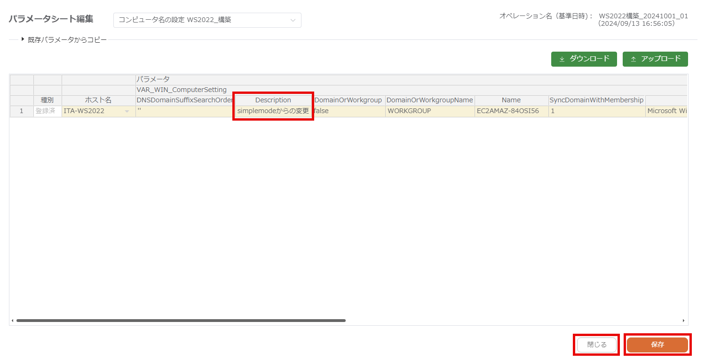
[Tips] スプレッドシートの操作
最下部のレコードを選択した状態でEnterキーを押すと行が追加されます。
Microsoft Excelと同様に行コピーや複数セルのコピー・ペーストも可能です。
また、この画面でコピーした内容をお手元のMicrosoft Excelに貼り付けることもできます。
ファイルアップロード型パラメータのファイル名リンクをクリックし、ファイルをダウンロードします。 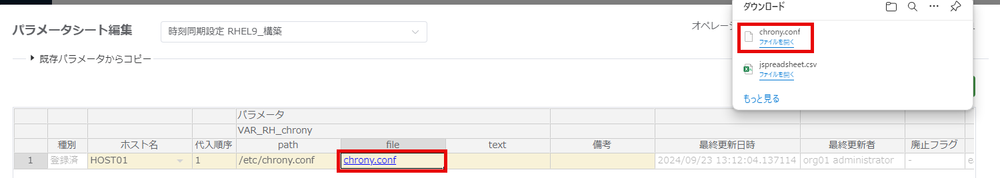
ファイル名を右クリックし、「Upload」をクリックすると、修正したファイルをアップロードして「保存」を押します。 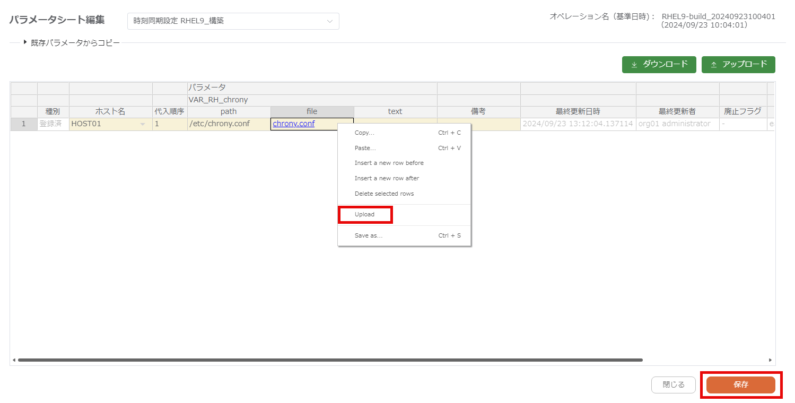
ここまでの操作を、変更対象のパラメータシート毎に実施します。
すべてのパラメータシートのステータスが"登録済"となっていることを確認し、「つぎへ」を押します。 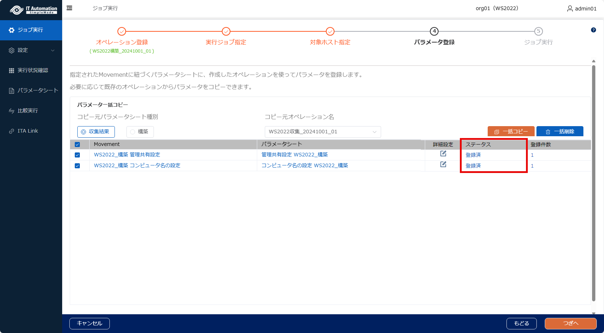
[Tips]
「パラメータ編集」ボタンからスプレッドシートでパラメータを変更する以外にも、ExcelファイルやJSONファイルのダウンロード・アップデートを行うことが可能です。
「ダウンロード」ボタンを押して形式を選択すると、ファイルがダウンロードされます。
「アップロード」ボタンで編集したファイルを選択して登録ができます。
[Tips]
「ダウンロード」ボタンを押して形式を選択すると、ファイルがダウンロードされます。
「アップロード」ボタンで編集したファイルを選択して登録ができます。
3-2-5. ジョブ実行¶
ここまでに設定した内容を確認して、「実行」を押します。 「実行」を押し、表示されたポップアップで「OK」を押すと実機へのパラメータ反映処理（構築）が始まります。 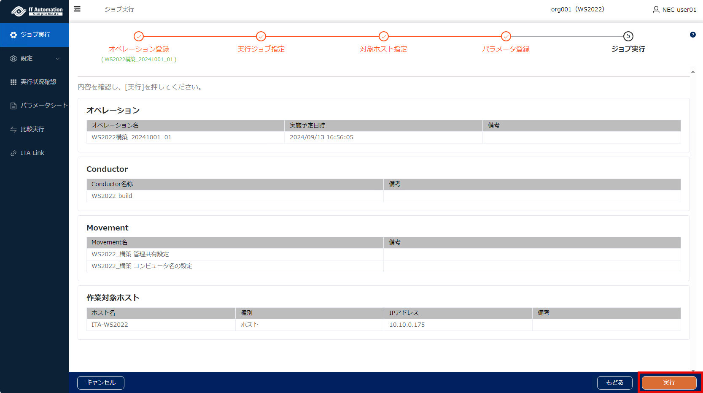
実行後は、「実行状況確認」画面に自動遷移します。 以降の手順は「3-1. 実機からパラメータを収集する（初回）」と同様です。
4. 2回目以降のパラメータ収集と構築¶
4-1. 実機からパラメータを収集する（２回目以降）¶
初回の収集では、デフォルトで設定済のオペレーションを利用してジョブを実行しました。 2回目以降は、新規オペレーションを作成し、過去に実行したオペレーションの設定値を流用してジョブを実行します。
4-1-1. 収集ジョブの開始¶
メニューから[ジョブ実行]を選択します。 この画面が表示された場合、「新しいウィザードの開始」を押します。
「オペレーションを新規登録する」を選択します。 任意のオペレーション名し、「つぎへ」を押します。 （例：WS2022収集_20241001_02） 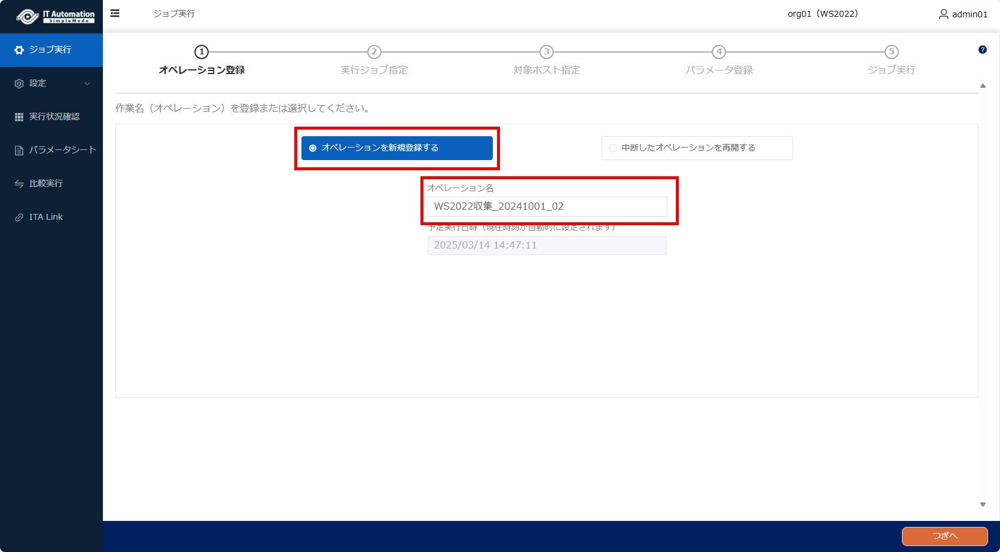
4-1-2. 収集ジョブの指定¶
Conductorに「＜OS名＞-gather」を選択します。 実行したいMovement（収集したいパラメータ）にチェックを入れて「つぎへ」を押します。 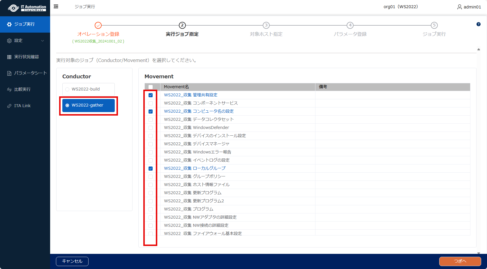
4-1-3. ホストの指定¶
対象のホストにチェックが入っていることを確認し、「つぎへ」を押します。 ※次の画面で過去の設定値を流用できるのは、以前に収集を実行済のホストのみです。 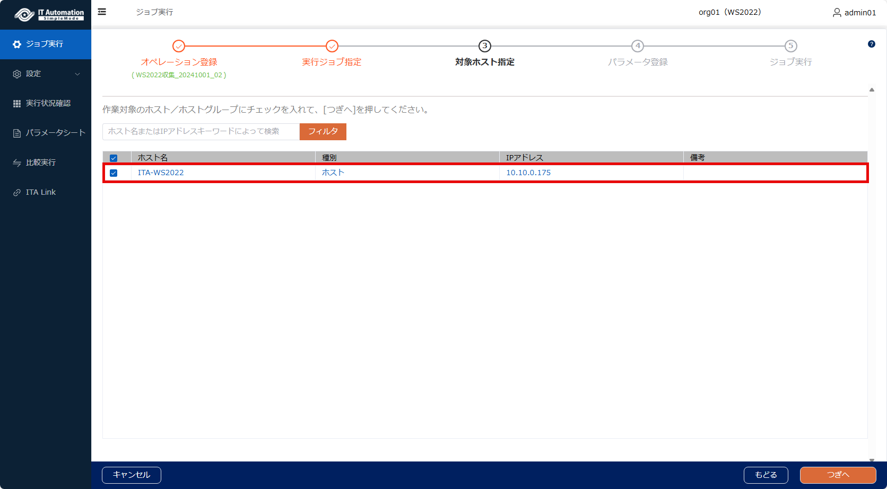
4-1-4. パラメータ登録¶
収集のためのパラメータを⼊⼒します。 ⼿動で⼊⼒することもできますが、コピー機能を⽤いて以前のオペレーションまたは収集初期値管理用オペレーションの設定を流⽤することができます。
①「コピー元オペレーション名」に収集ジョブ実⾏時に選択したジョブを選択します。
収集初期値管理のみ表⽰を外して、以前のオペレーションが表示できます。
ここでは例として「WS2022収集_20241001_01」という以前のオペレーションを選択します。
②すべてのMovement（パラメータシート）にチェックを⼊れます。
③「⼀括コピー」ボタンを押すと、収集設定が現在のウィザード（オペレーション）にコピーされます。
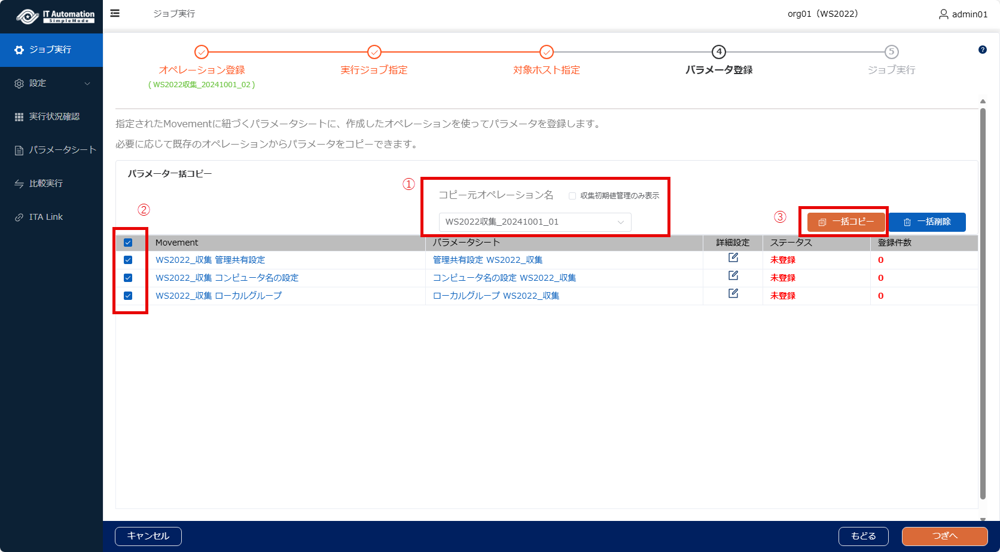
すべてのパラメータシートのステータスが"登録済"となっていることを確認し、「つぎへ」を押します。 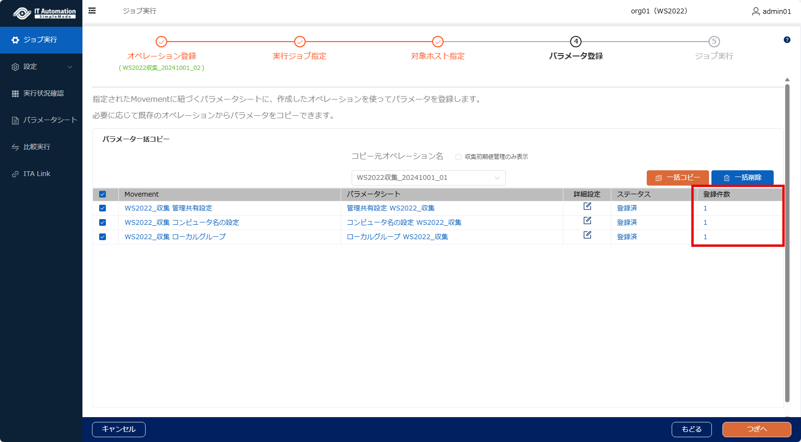
[Tips] 収集結果のフィルタリング設定
一部のパラメータシートでは、収集データを絞り込むためのキーワードが登録されています。
フィルタするキーワードを変更する場合、「詳細設定」ボタンを押して、フィルタ用パラメータを変更します。
※キーワードを変更すると取得するデータの件数が増加する可能性があります。
データの件数が多すぎると、性能面で問題が出る可能性があります。
また、件数が一定値を超えるとジョブが異常終了します。
4-1-5. ジョブ実行¶
ここまでに設定した内容を確認して、「実行」を押します。 「実行」を押し、表示されたポップアップで「OK」を押すと実機からのパラメータ収集処理が始まります。 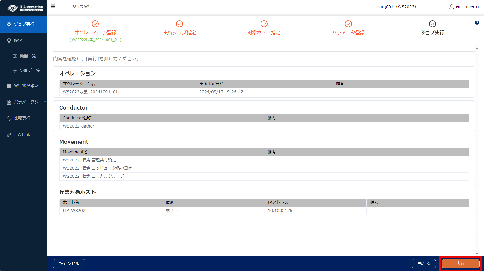
実行後は、「実行状況確認」画面に自動遷移します。 以降の手順は「3-1. 実機からパラメータを収集する（初回）」と同様です。
5. ターゲットホストの追加¶
5-1. ターゲットホストを追加する¶
ターゲットホストを追加する場合、ここまでに説明した準備手順、ジョブの実行手順に、以下の内容を加えていきます。
章 |
項目 |
説明 |
|---|---|---|
5-1-1 |
機器一覧でホストを追加する |
機器一覧に2台目以降のホストを新規に追加する |
5-1-2 |
ウィザードで対象ホストに指定 |
ジョブ実行ウィザードで対象ホストとしてチェックする |
5-1-3 |
ウィザードでパラメータを登録 |
ジョブ実行ウィザードで追加したホストのパラメータを登録する |
5-1-1. 機器一覧でホストを追加する¶
「設定」から「機器一覧」を選択します。 「登録ボタン」を押します。 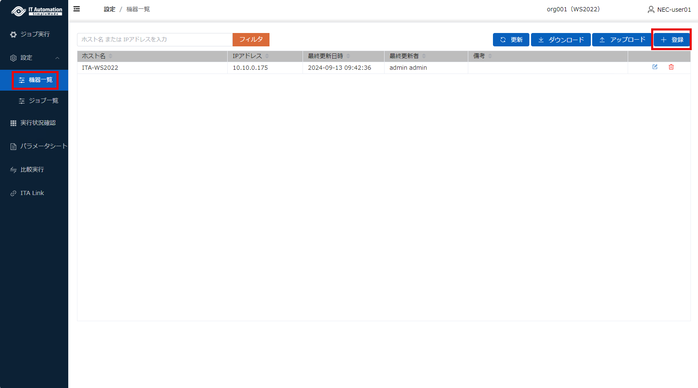
各項目をターゲットホストに合わせて入力し、「登録」ボタンを押します。 以下、Windows Serverがターゲットの場合の入力例を示します。 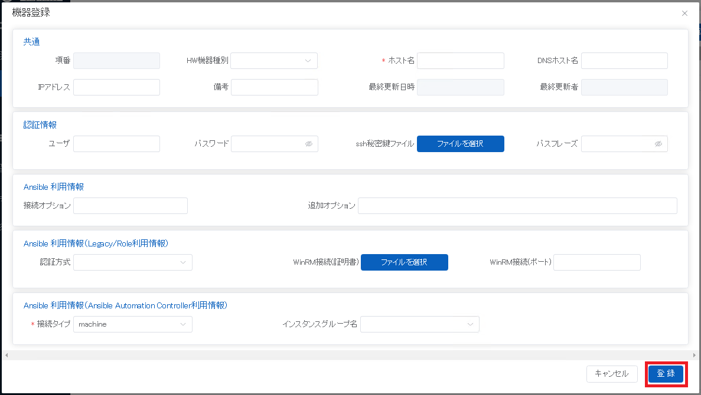
項目 |
設定例 |
|---|---|
HW機器種別 |
（例）SV |
ホスト名 |
（例）ITA-WS2022-2 |
IPアドレス |
（例）192.168.10.2 |
ユーザー名 |
（例）Administrator |
パスワード |
（例）password |
追加オプション |
（例）ansible_winrm_server_cert_validation: ignore |
認証方式 |
（例）パスワード認証(WinRM) |
WinRM接続(ポート) |
（例）5986 |
接続タイプ |
（例）machine |
ホストが追加されたことを確認します。 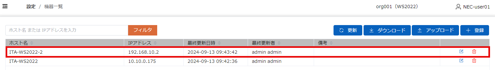
※追加したホストにジョブを実行するためには、WinRMやssh等、Ansibleからの接続を受け付ける設定を実施しておく必要があります。
5-1-2. ウィザードで対象ホストに指定¶
他の手順で説明した内容と同様に、ジョブ実行ウィザードを開始します。 [対象ホスト指定]で、初回収集で対象としたホストと追加したホストにチェックを入れて「次へ」を押します。 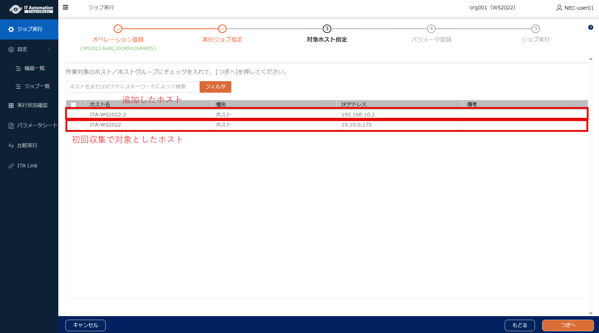
5-1-3. ウィザードでパラメータを登録¶
ここでは構築ジョブを実行する場合を例に説明します。 最初に以前に実行したオペレーションの収集結果からパラメータをコピーします。
「詳細設定」ボタンを押します。 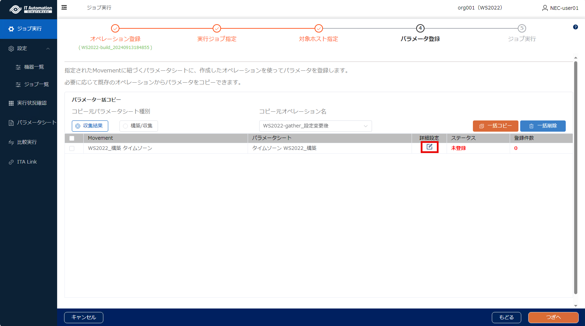
以下の手順に沿って、収集結果をコピーします。
①「既存パラメータからコピー」をクリックする。
②パラメータシートに「タイムゾーン WS2022_収集結果」を選択する。
③オペレーション名に収集した際のオペレーションを選択する。
ここでは「WS2022収集_20241001_01」を選択する。
④ホストに初回収集で対象にしたホストを選択する。
⑤パラメータ参照をクリックして、コピー元の対象パラメータを確認する。
⑥「コピー」ボタンを押す。
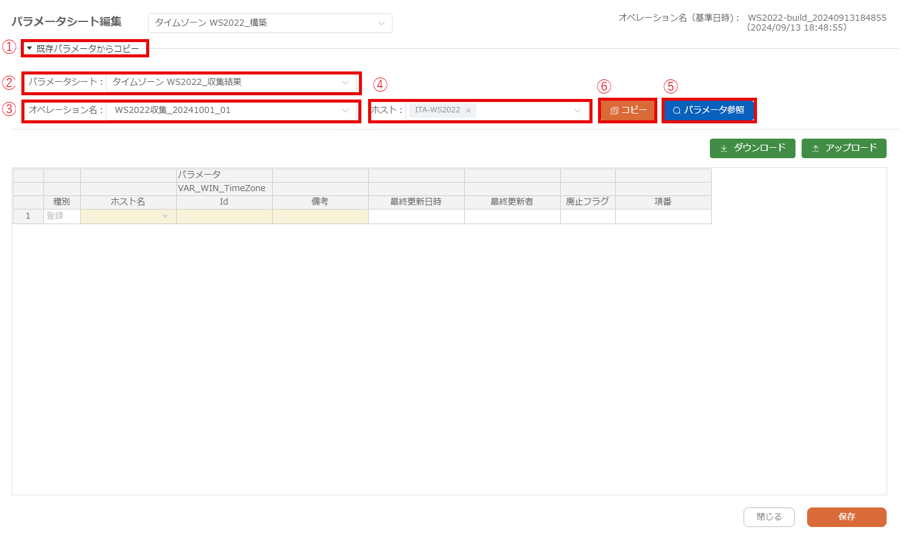
コピー元と同じパラメータがコピーされることを確認します。 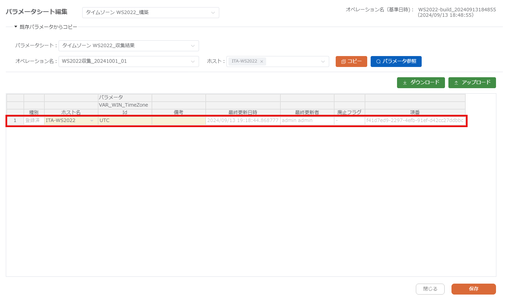
既に入力済の内容を参考に、追加したホストのパラメータを入力します。 ※スプレッドシートの行は、次のいずれかの方法で追加できます。
最下行でEnterキーを押す
行番号を右クリックし、「Insert a new row」をクリックする
パラメータを入力後、「保存」ボタンを押します。 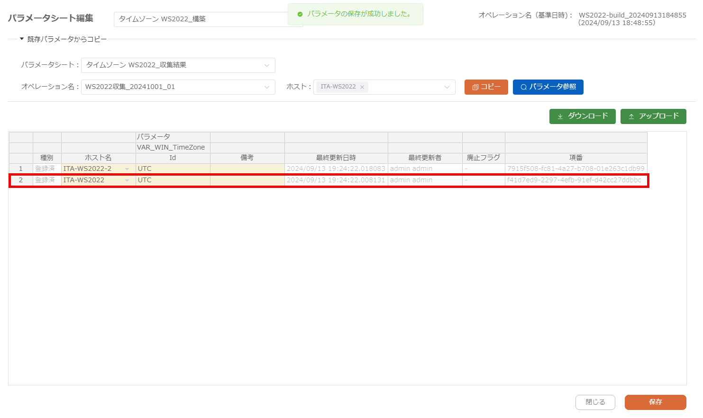
すべてのパラメータシートに対してこの手順を繰り返します。
[Tips]
今後のバージョンで収集設定の初期値入力を効率化する機能の実装を予定しています。
以降の手順は他のジョブ実行手順と同様です。
6. パラメータ比較¶
SimpleModeでは、収集結果や構築用パラメータの比較を行うことができます。 本手順では、収集結果同士の確認を例に、実行手順を説明します。
6-1. 比較の前提条件¶
パラメータの比較を行うためには、以下の条件を満たしている必要があります。
2件以上のオペレーションが実行済
同じパラメータシート、または対応するパラメータシートにパラメータが登録済
本手順では、以下の2件のオペレーションを実行済の状態であることを前提とします。
オペレーション |
実行内容 |
|---|---|
WS2022-gather_設定変更前 |
WS2022_収集 タイムゾーン を実行 |
WS2022-gather_設定変更後 |
WS2022_収集 タイムゾーン を実行 |
※同じConductor、Movementを実行して、設定値を収集しています。
6-2. 比較の開始¶
メニューから[比較実行]を選択します。 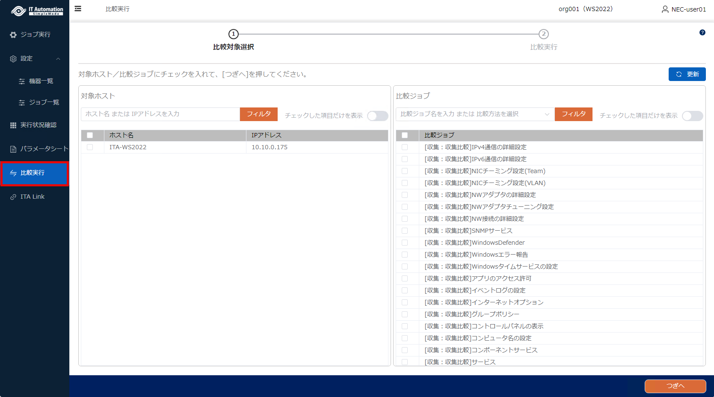
左側の[対象ホスト]欄で、対象とするホストにチェックを入れます。 右側の[対象ジョブ]欄で、比較ジョブを選択します。 今回のシナリオでは、事前に取得していた「Windowsタイムゾーンの設定」のパラメータ収集結果を比較します。 「[収集：収集比較]Windowsタイムゾーンの設定」にチェックを入れて「次へ」を押します。
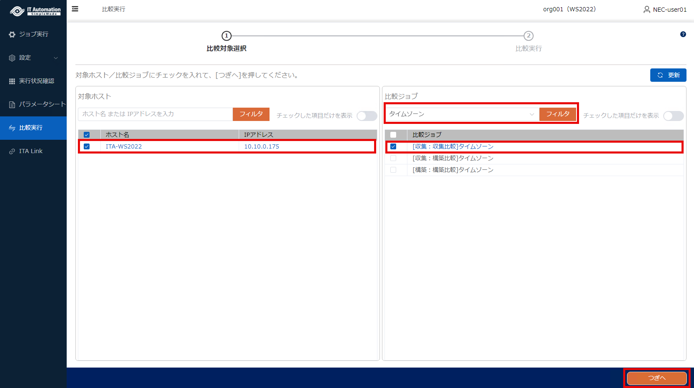
[Tips] 比較の種類
比較の種類は以下の３種をバンドルしています。
収集：収集比較 実機から収集したパラメータ（収集結果）同士を比較します。
収集：構築比較 実機から収集したパラメータ（収集結果）と設定変更に用いたパラメータ（構築設定）を比較します。
構築：構築比較 設定変更に用いたパラメータ（構築設定）同士を比較します。
6-3. 比較の実行¶
前ページで選択した条件に沿って比較を行う画面です。 ここでは、比較対象のオペレーションを2件選択します。 対象のオペレーションは、ダブルクリックすることでプルダウンから選択できます。 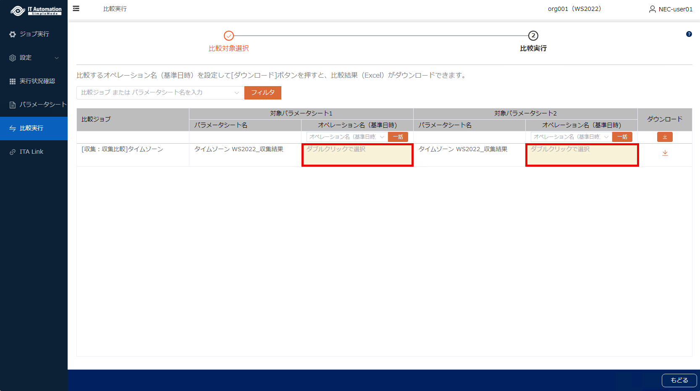
ここでは、前述した条件に記載したオペレーションを指定します。 [ダウンロード]ボタンを押すと、比較結果をExcelファイルでダウンロードすることができます。
6-4. 比較結果の確認¶
ダウンロードされたExcelファイルを開きます。
[比較条件_結果一覧]シートには、比較結果のサマリが記載されています。比較結果に差分がある場合、比較結果には「差分あり」と表示されます。 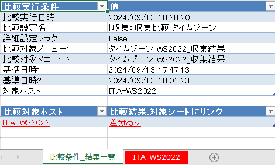
ホスト名シートには、比較結果の詳細が記載されています。 差分があるパラメータは[差分]列に"●"が表示され、該当行の値は赤字で表示されます。 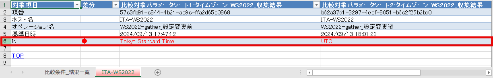
6-5. ファイルアップロード型パラメータの比較結果の確認¶
ファイルアップロード型パラメータを含むジョブを比較すると、
ファイルアップロード型パラメータのファイルの中身に差分がない場合は、6-4. 比較結果の確認 と同様に、比較結果のダウンロードはExcelファイルとなります。
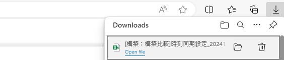
[比較条件_結果一覧]シートには、比較結果のサマリが記載されています。 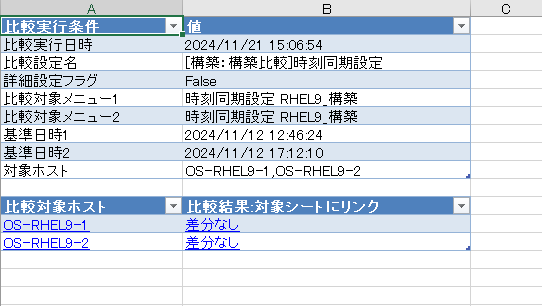
ファイルアップロード型パラメータのファイルの中身に差分がある場合は、比較結果のダウンロードはZIPファイルとなります。 ZIPファイルには、下記のファイルが含まれています。 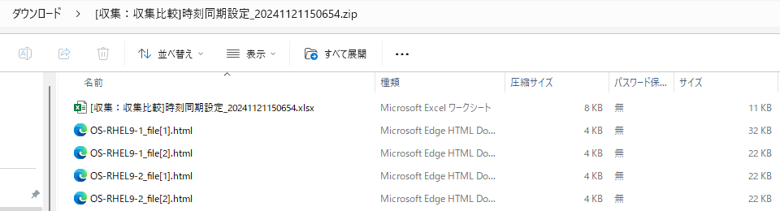
ファイル名 |
説明 |
|---|---|
比較ジョブ名_YYYYMMDDHHmmSS.xlsx |
比較ジョブの比較結果ファイル |
ホスト名_パラメータ名[代入順].html |
ファイルアップロード型の内容比較結果ファイル |
htmlファイルは、差分のある箇所の周辺のみ表示します。
[Tips] ファイルアップロード型のファイル内容差分の有無について
ダウンロードされたファイルがZIPファイルの場合は、ファイル内容に差分があると判断できます。ただし、制限事項のNo.6にも記載の通り、ZIP内のExcelファイルには「差分なし」と誤って表示される点に注意してください。個々のhtmlファイルを参照することで差分が確認できます。
7. 収集初期値管理機能¶
SimpleModeは、収集設定の初期値の管理機能を利用して、収集設定の初期値が新規作成・更新できます。ジョブ実行の際には、収集設定の初期値を選択して、選択されたすべてのホストに一括でコピーすることができます。
7-1. 収集設定の初期値の新規作成¶
メニューから「設定」「収集初期値管理」を選択します。「オペレーション名」で「オペレーション登録」ボタンを押します。
オペレーション名を入力して、「登録」ボタンを押します。
「パラメータシート選択」ボタンを押して、パラメータシートを選択します。
左側の一覧からパラメータシートをチェックして、「>」ボタンを押してから「保存」ボタンを押します。
「詳細設定」ボタンを押して、パラメータシートの設定値を更新します。
下記の手順に沿って他のオペレーションから初期値がコピーできます。手動でパラメータを入力することも可能です。
①「既存パラメータからコピー」をクリックする。
②オペレーション名にコピー元のオペレーションを選択する。
③「コピー」ボタンを押す。
手動でパラメータを編集した後、「保存」ボタンを押します。
7-2. 収集設定の初期値の更新¶
メニューから「設定」「収集初期値管理」を選択します。「オペレーション名」に登録した収集初期値管理用オペレーションを選択します。
ここでは例として予めに登録した「WS2022-gather-default」を選択します。
登録したパラメータシートが表示されますので、「ステータス」でパラメータを登録済みであるか、「登録件数」で登録済みパラメータ件数が確認できます。
「詳細設定」ボタンを押して、パラメータシートの設定値を更新します。
8. ITA Link機能¶
SimpleModeは、Exastro IT Automationのパラメータ構成管理機能やジョブ実行機能をバックエンドとして呼び出しています。呼び出しているパラメータやジョブは、Exastro IT Automation本体から直接確認することもできます。 本手順では、バックエンドとして使っているExastro IT Automationへの接続方法を説明します。
8-1. Exastro IT Automation へのログイン¶
メニューから[ITA Link]を選択します。
[Link to ITA]ボタンを押します。
Exastro IT Automation のログイン画面が新しいタブで開きます。 UsernameとPasswordを入力して[Sign In]ボタンを押します。
[Tips] Exastro IT Automationへのログイン情報
ここで入力するユーザー名とパスワードは、SimpleModeへのログイン時に入力した情報を入力します。
ログイン情報は「SimpleMode利⽤情報.pdf」の「Exastro IT Automation（接続確認⽤）」の項を参照してください。
Exastro IT Automation の画面が開きます。 以降の操作手順は、Exastro IT Automationのマニュアルをご覧ください。
制限事項¶
一部の収集ロール（Movement）は、収集可能な件数に上限があります。 以下の収集ロール（Movement）を実行する際は、収集結果の上限値を超えることが予想されるため、収集パラメータの「VAR_filtering_condition」にキーワードを設定し、収集結果の絞り込みを行うことを推奨します。キーワードによっては上限数を超える可能性があり、その場合は収集ロール実行が失敗します。設定例と上限件数を参考に設定してください。
以下に設定例を示します。 デフォルトで用意しているオペレーション「＜OS名＞-gather-default」では、この設定例の値をフィルタ条件として設定しています。
ロール（Movement名）
設定例
上限件数
説明
デバイスマネージャ WS2022_収集
USB
64
デバイス名の一部
イベントログの設定 WS2022_収集
Microsoft-AppV
28
イベントログのフルネームの一部
グループポリシー WS2022_収集
WindowsUpdate
64
グループポリシーに関連するレジストリ名の一部
ＮＷアダプタの詳細設定 WS2022_収集
IPv4
50
ネットワークアダプタ名またはプロパティ名の一部
ＮＷ接続の詳細設定 WS2022_収集
IPv4
30
ネットワークアダプタ名またはプロパティ名の一部
ファイアウォール受信の規則 WS2022_収集
RDP
32
「受信の規則」の「名前」の一部
ファイアウォール送信の規則 WS2022_収集
HTTP
32
「送信の規則」の「名前」の一部
セキュリティポリシー WS2022_収集
Password
20
セキュリティポリシーの設定名の一部
サービス WS2022_収集
Microsoft
32
サービス名またはサービス表示名の一部
役割と機能 WS2022_収集
.NET Framework
20
役割と機能の名称の一部
パッケージインストール RHEL9_収集
NetworkManager
64
パッケージの名称の一部
システムサービス起動制御 RHEL9_収集
NetworkManager
16
サービスの名称の一部
フィルタのキーワードに指定する値については、各ロールとGUI上での設定項目のマッピングを説明した「Windows_OSロールガイド（ロールパラメータとGUIのマッピング）.xlsx」、「RHEL_OSロールガイド（ロールパラメータとOS設定のマッピング）.xlsx」をご覧いただき、ご検討いただくことを推奨いたします。 各ロールの画面とのマッピングの説明は、以下のいずれかのシートに記載されています。
マッピング詳細_構築ロール
マッピング詳細_収集ロール
一部のRHEL9の収集ロール（Movement）は、デフォルトで用意しているオペレーション「RHEL9-gather-default」に収集対象が設定されています。
ロール（Movement名）
パラメータシート名
収集対象
ディレクトリ設定 RHEL9_収集
VAR_OS_gathering_dir_path
/var/*
/home/*
/usr/*
/opt/*ファイル設定 RHEL9_収集
VAR_OS_gathering_file_path
/etc/cron.allow
/etc/cron.deny
/etc/cron.daily
/etc/cron.hourly
/etc/cron.weekly
/etc/cron.monthly
/etc/rc.d
/etc/security/console.apps
/etc/security/opasswd
/usr/local/bin[パラメータシート]メニューで参照できないパラメータシートがあります。 現在のバージョンで参照できないパラメータシートは以下です。
パラメータシート名
デバイスマネージャ WS2022_収集結果
SNMPサービス WS2022_収集結果
スタートアップのプログラム WS2022_収集結果
パーティション構成 WS2022_収集結果
プリンター情報 WS2022_収集結果
プログラム WS2022_収集結果
ボリューム構成 WS2022_収集結果
共有フォルダ WS2022_収集結果
更新プログラム2 WS2022_収集結果
これらのパラメータシートに設定された値は、以下のいずれかの手段で参照することができます。
[ジョブ実行]ウィザードのパラメータ登録のフェーズで確認する。
[ITA Link]メニューからExastro IT Automationへログインし、「入力用」メニューまたは「パラメータ集」メニューから参照する。
パラメータシートには、ファイルアップロード型のパラメータを含む場合、下記２点制限があります。
ファイルダウンロードする際、ファイル名に拡張子が付いていない場合においても、ダウンロード後に拡張子(.txt)が付与されます。
ファイル内容用パラメータ(text、value、properties)は、利用できません。
ファイルアップロード型パラメータは差分がある場合、HTMLファイルが出力されるが、ダウンロードされるExcelファイルには「差分なし」と表示されます。
ホスト名に「*?/:\」の特殊文字を含む場合、ファイルアップロード型の比較結果のHTMLファイルが作成できません。
RHEL9_構築 パッケージインストールがインターネット接続不可の環境ではエラーになります。
役割と機能 WS2022_構築は、cabファイル指定で実質的に使用できないので、本バージョンには対象外です。
改版履歴¶
版数 |
日付 |
内容 |
|---|---|---|
1.0 |
2024/07/12 |
初版 |
1.1 |
2024/09/27 |
v1.1機能拡張 |
1.2 |
2024/12/13 |
v1.2機能拡張 |
1.3 |
2025/03/24 |
v1.3機能拡張 |